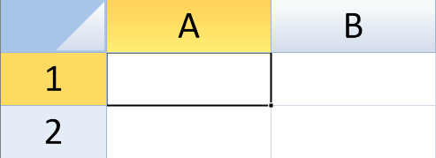

SpreadJS allows you to perform zoom operation to zoom in or out of a sheet's viewport. It can be performed by using any of the following:
The cell size and its contents will zoom in or out along with the viewport.

Borders, gridlines, freeze lines, split bars, and the selection indicator are not affected.
By using sheet.zoom(zoomFactor), you can set the zoom factor to any value between 0.1 and 4. The zoom operation is enabled by default. However, you can choose to disable it by setting options.allowUserZoom property to false.
This example sets the options.allowUserZoom property.
| JavaScript |
Copy Code
|
|---|---|
activeSheet.zoom(3); |
|
When a zoom operation is performed, ViewZooming and ViewZoomed events are triggered. These events can be used to intervene the zoom process and apply any operation, like setting the minimum or maximum zoom limit of a viewport.
This example sets the minimum and maximum zoom limit of a spreadsheet's viewport by using newZoomFactor argument.
| JavaScript |
Copy Code
|
|---|---|
// Limit zoom action by newZoomFactor argument // set allowUserZoom to true spread.options.allowUserZoom = true; activeSheet.bind(GC.Spread.Sheets.Events.ViewZooming, function (e, info) { if (info.newZoomFactor >= 2) { info.newZoomFactor = 2; // the max zoom factor is 2 } if (info.newZoomFactor < 1) { info.newZoomFactor = 0.5; // the min zoom factor is 0.5 } }); |
|
This example sets the maximum zoom limit of a spreadsheet's viewport by using cancel argument.
| JavaScript |
Copy Code
|
|---|---|
//Limit zoom action by cancel argument //set allowUserZoom to true spread.options.allowUserZoom = true; activeSheet.bind(GC.Spread.Sheets.Events.ViewZooming, function (e, info) { if (info.newZoomFactor >= 2) { info.cancel = true; // cancel this zooming action } }); |
|